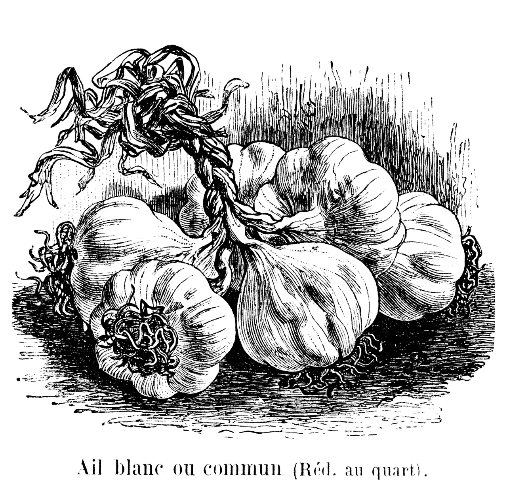
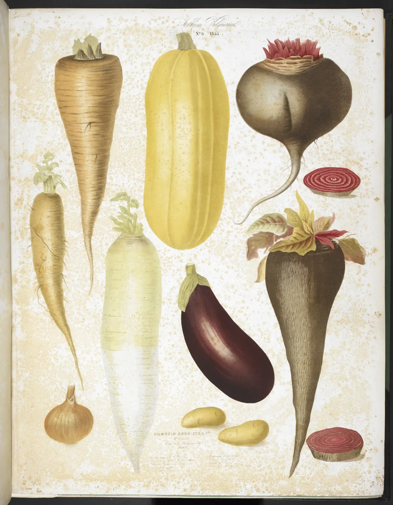
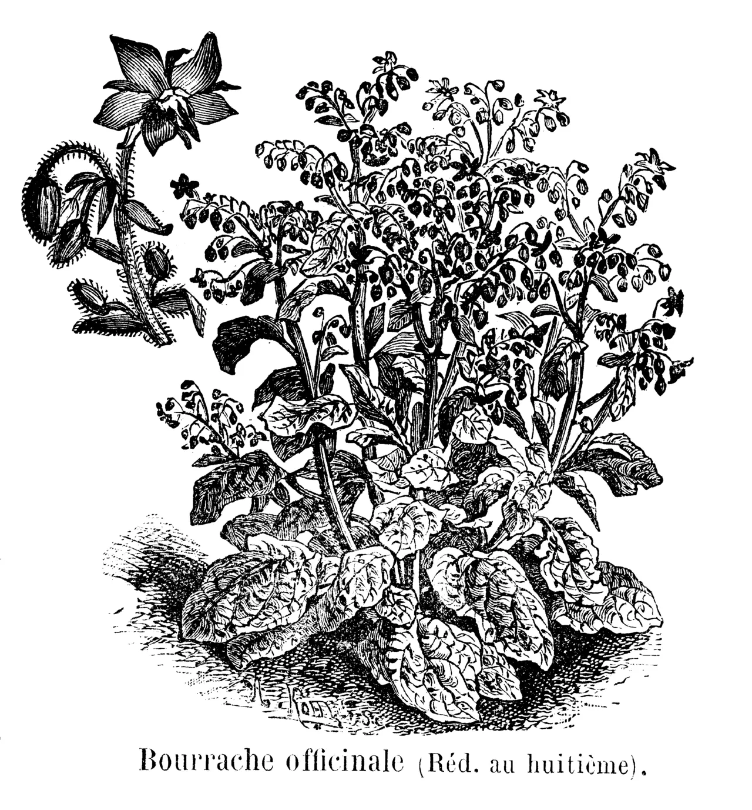
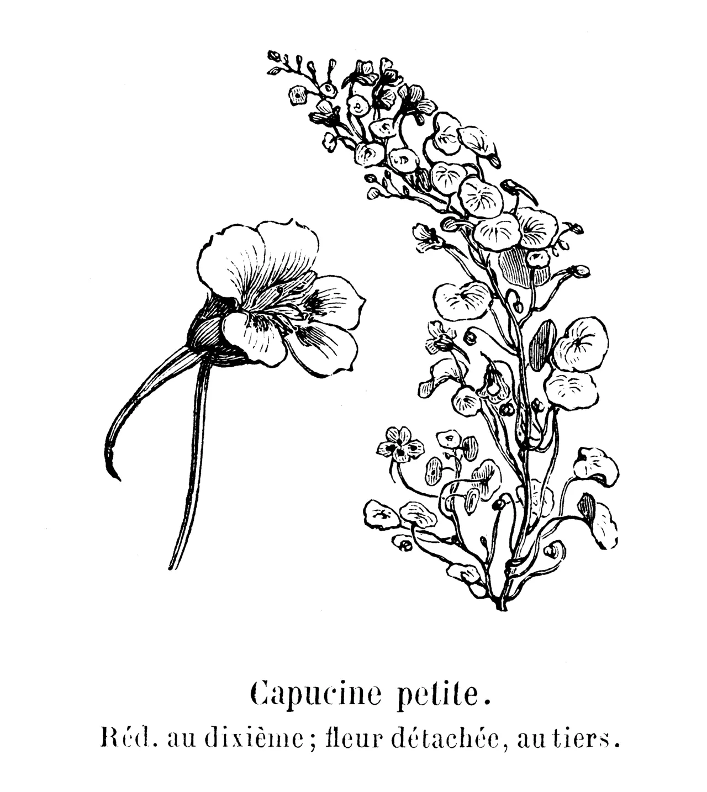
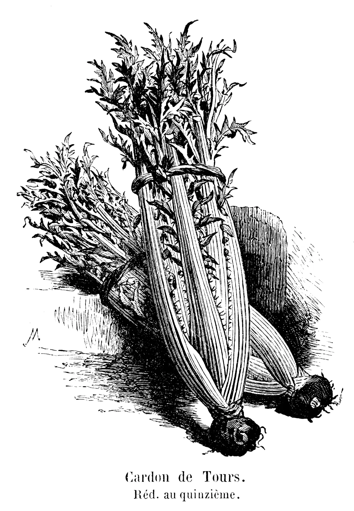
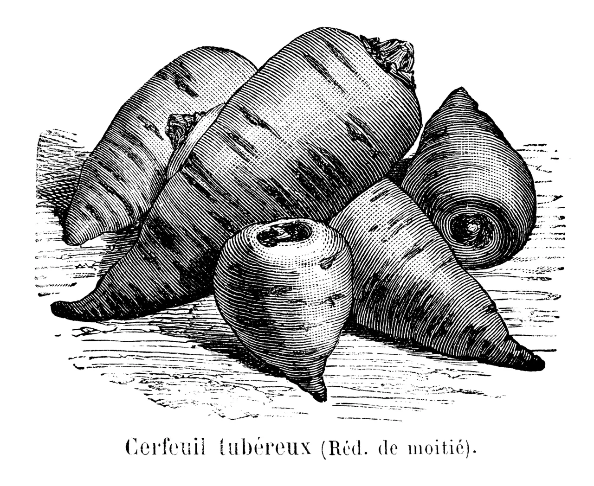
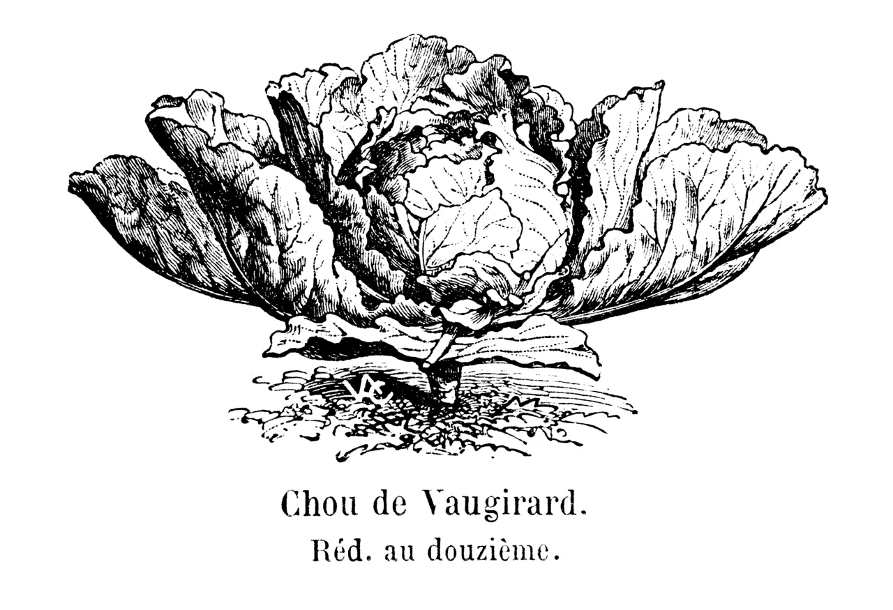
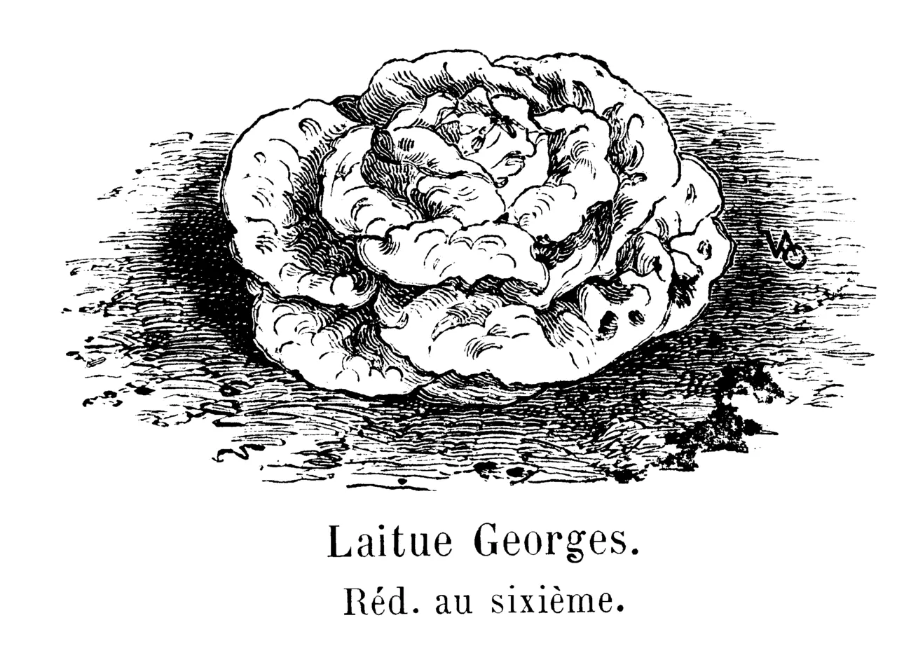

Ail blancWhite garlic · Allium sativum
Sow
- When
- Plant cloves Oct–Dec or Feb.
- Harvest
- July.
- Saving
- Keep back your six fattest bulbs and replant their cloves.
6 of 10 packets in the drawer · 11 came back last year
Seed libraryWren Street branch
Seven old varieties live in a card drawer by the returns desk. Take a packet on your library card, grow it in a pot or a plot, and let the best plant go to seed. Next autumn, the drawer is a little fuller.


Sow
6 of 10 packets in the drawer · 11 came back last year

Sow
9 of 12 packets in the drawer · 14 came back last year

Sow
2 of 12 packets in the drawer · 9 came back last year

Sow
4 of 6 packets in the drawer · 2 came back last year

Sow
0 of 8 packets in the drawer · 5 came back last year

Sow
5 of 8 packets in the drawer · 1 came back last year

Sow
11 of 12 packets in the drawer · 17 came back last year
Wren Street Library
14 Wren Street
Ground floor, beside the returns desk
| Tuesday | 10:00–19:00 |
|---|---|
| Wednesday | 10:00–17:00 |
| Thursday | 10:00–19:00 |
| Friday | 10:00–17:00 |
| Saturday | 09:30–16:00 · seed swap first Saturday, 10–12 |
| Sun, Mon | Closed |